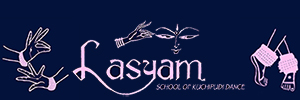
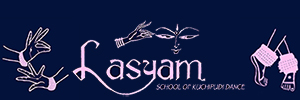

Lasyam School of Kuchipudi Dance was founded in February, 2000 by Hemamalini Yaddanapudi.
The school has since been providing the Greater Chicagoland Area with the highest-quality
instruction of the ancient art of Kuchipudi, a 14th Century South Indian Classical Dance.
Lasyam's mission is to empower students of all ages to begin learning about the rich cultural
history of Indian dance through Kuchipudi. Students will be masterfully trained in the techniques
of Kuchipudi's fundamentals and provided with a deep understand of ___ and ___. Our school also
provides students with an everlasting resilience, robust confidence, self-reliance, and a deep
appreciation for arts and culture. As part of the Lasyam family, your child will undoubtedly build
a strong foundation of discipline, motivation, and versatility. We hope to hear from you soon!

 
